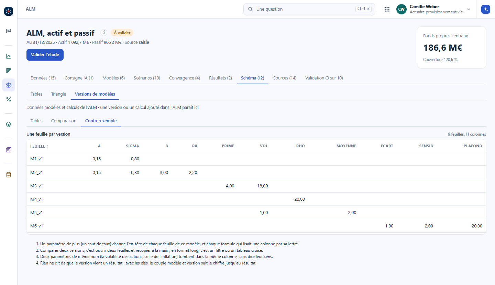
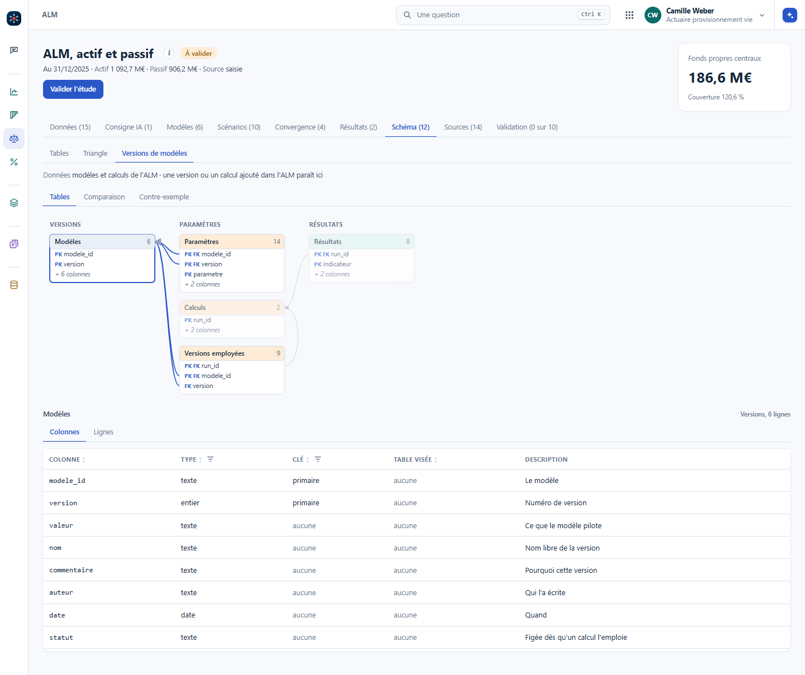
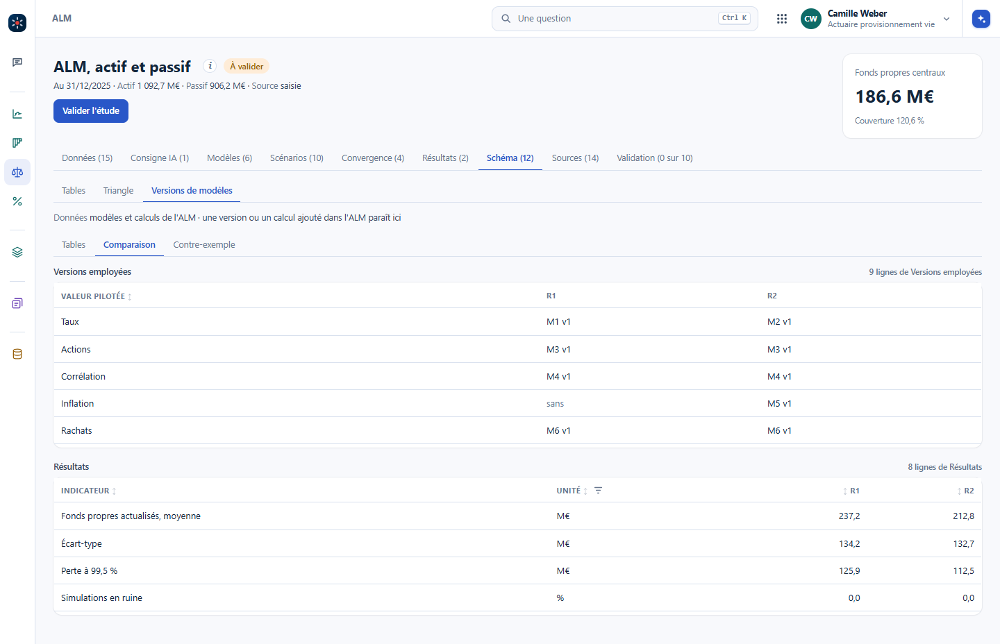

Le code se versionne de plus en plus. Les résultats, rarement. Ils vivent dans des fichiers dont le nom porte l'histoire : provisions_v3_final_OK_bis.xlsx. Trois mois plus tard, personne ne sait lequel a servi, ni avec quelles hypothèses. C'est le maillon qui manque, et c'est celui qu'un contrôleur regarde.
Un résultat seul ne veut rien dire. Ce qui a une valeur, c'est l'ensemble de ce qui a produit le résultat, gardé ensemble :
Quelles extractions, de quelle date, avec quelle empreinte. Pas « la base clients », mais le fichier exact.
La version précise : l'identifiant du commit, ou le nom de la version publiée. Pas « la version de mars ».
Taux, table, seuils, graine aléatoire. Celles qu'on déclare à un seul endroit, comme le montre le chapitre Organiser les algorithmes.
Les tableaux et les figures, dans un dossier daté qui ne se réécrit pas.
En pratique, un dossier par exécution, nommé par la date et l'objet, et dedans un petit fichier qui note les quatre points ci-dessus. Cinq lignes de code à écrire une fois, et le calcul les écrit tout seul à chaque lancement.
Au dessus des dossiers, une table d'une ligne par exécution : la date, l'objet, la version du code, les hypothèses qui changent d'une fois sur l'autre, et le résultat principal. Elle se lit d'un coup d'œil et elle répond aux deux questions qu'on pose toujours : laquelle a servi pour l'arrêté, et qu'est-ce qui a changé depuis la précédente.
Un exemple sur le triangle public de Taylor et Ashe (1983), en unités non monétaires :
| Exécution | Objet | Code | Hypothèses | Ultime | Provision |
|---|---|---|---|---|---|
| 2026-03-14 09:20 | Taylor-Ashe, chain ladder | a3f91c2 | facteurs pondérés, sans queue | 53 038 946 | 18 680 856 |
| 2026-03-14 16:05 | Taylor-Ashe, chain ladder | a3f91c2 | facteurs pondérés, queue 1,02 | 54 099 725 | 19 741 635 |
| 2026-03-15 11:40 | Taylor-Ashe, chain ladder | a3f91c2 | facteurs pondérés, queue 1,05 | 55 690 893 | 21 332 803 |
Le code ne bouge pas, une seule hypothèse change : la queue à 1,02 ajoute 1 060 779 à la provision, la queue à 1,05 en ajoute 2 651 947. L'ultime et la provision sont deux grandeurs différentes, et le registre les garde toutes les deux. Une correction de code se lit de la même façon : un identifiant de commit qui change, des hypothèses qui ne bougent pas, et l'écart chiffré. C'est exactement ce qu'on cherche à savoir, et c'est illisible dans une arborescence de fichiers nommés à la main.
Le registre range les exécutions. Les modèles se rangent de la même façon, même si ce n'est pas toujours intuitif. Une table des modèles, une ligne par version : le numéro du modèle, sa version, la valeur qu'il pilote, un nom, un commentaire libre comme « calibration sur telle période », l'auteur, la date, et le statut, figée dès qu'un calcul l'emploie. Les paramètres en format long : le modèle, la version, le paramètre, sa valeur, son unité. Puis les calculs, les versions que chacun emploie, et les résultats, une ligne par calcul et par indicateur. Des clés relient le tout : un résultat dit de quel calcul il vient, et un calcul de quelles versions.
Le contre-exemple est celui qu'on fait spontanément : une feuille par version, les paramètres en colonnes. Un paramètre de plus change l'en-tête de chaque feuille et chaque formule qui lisait une colonne par sa lettre. Comparer deux versions, c'est ouvrir deux feuilles et recopier à la main. Et rien ne dit de quelle version vient un résultat.


Dans Vision : l'ALM, onglet Schéma, puis Versions de modèles (#/alm?ong=schema&sch=versions). Une version ou un calcul ajouté dans l'ALM y paraît aussitôt. Les versions elles-mêmes se créent dans l'onglet Modèles, au chapitre Projeter.
La question utile n'est jamais « les fichiers sont-ils différents », c'est « quels chiffres ont bougé, de combien, et pourquoi ». Un petit script de comparaison, qui prend deux dossiers d'exécution et sort les écarts ligne à ligne au delà d'un seuil, remplace le collage dans un tableur.
Quand les résultats sont en table, la comparaison est un tableau croisé. Dans Vision, deux calculs de l'ALM côte à côte : au dessus, les versions que chacun emploie ; en dessous, les indicateurs. R1 et R2 ne diffèrent que par le modèle de taux et l'inflation des frais, et la table le montre avant les chiffres.

Un écart s'explique par une seule cause à la fois. Changer les hypothèses et le code en même temps, puis chercher d'où vient la différence, coûte toujours plus cher que deux exécutions séparées.
La version du code est liée à celle des résultats : retrouver un résultat, c'est retrouver le jeu d'entrées qui l'a produit et le code qui l'a calculé. Pour le code, l'outil existe, et il ne demande presque rien : Git.
Git a été créé en 2005 par Linus Torvalds, l'auteur de Linux, pour faire avancer le noyau à des milliers de mains. GitHub et GitLab sont des plateformes construites par-dessus : elles hébergent les dépôts, montrent l'historique, accueillent les relectures ; Microsoft a racheté GitHub en 2018 pour 7,5 milliards de dollars. Chaque enregistrement, un commit, garde l'état de tout le projet sans tout recopier : un fichier qui ne change pas n'est pas stocké deux fois, et ceux qui changent sont compressés par différences. On retrouve tout l'historique, et l'on revient à n'importe quelle version.
Une version qui compte se nomme : une étiquette, et sur GitHub une release, « 1.0 » ou « Arrêté 2025 ». Le registre des exécutions cite ce nom ; dans trois ans, on saura quel code relancer pour retrouver le chiffre.
Une extraction datée et son empreinte. Elles se gardent à part, jamais dans le dépôt du code.
Les plus simples à versionner : une ligne par jeu d'entrées, qu'on crée à la main, comme au chapitre La traçabilité.
Un commit pour chaque étape, une étiquette pour la version qui sert, et les versions des paquets.
Les trois avancent chacun de leur côté : un nouveau jeu de paramètres ne demande pas de nouvelle version du code, et une correction du code ne touche pas aux jeux. Le résultat porte les trois identifiants.
Les versions des paquets. Un paquet R ou Python qui change de version peut casser un calcul, ou changer un chiffre sans rien dire. La bonne pratique : écrire le numéro de chaque paquet, dans le dépôt, à côté du code, avec requirements.txt et des == en Python, renv.lock en R. Les anciennes versions restent disponibles sur PyPI et dans les archives du CRAN : avec ce fichier, on remonte l'environnement de l'époque.
Au quotidien, quelques gestes suffisent, et le reste s'apprend le jour où il sert.
git push n'envoie pas les étiquettes, il faut git push origin <étiquette>.Et si l'on n'a qu'Excel ? La philosophie se reprend telle quelle. Un onglet des paramètres, une ligne par jeu ; une cellule ou un onglet qui dit la version du calcul, son numéro, sa date, ce qui a changé ; les résultats rangés avec l'identifiant du jeu et la version du calcul. Données, paramètres et calcul se tiennent à part, comme avec du code. Les onglets Jeux d'entrée et Résultats du classeur d'exemple en montrent la forme.
Une IA propose vite une variante : un autre lissage, une autre queue de triangle, un autre découpage de tranches. Sans exécutions tracées, ces variantes deviennent un amas de fichiers dont on ne sait plus lequel dit quoi. Avec, chaque proposition devient une ligne de registre et un écart chiffré, c'est-à-dire une décision documentée.
Retrouvez le fichier de résultats qui a servi. Pouvez-vous dire quelle version du code l'a produit, avec quelles hypothèses, et à partir de quelle extraction ? Chronométrez le temps qu'il vous faut.
Le fichier se retrouve en quelques minutes, les hypothèses dans un courriel, et la version exacte du code presque jamais. C'est le trou que ce chapitre ferme, et il se ferme avec cinq lignes de code au bon endroit.